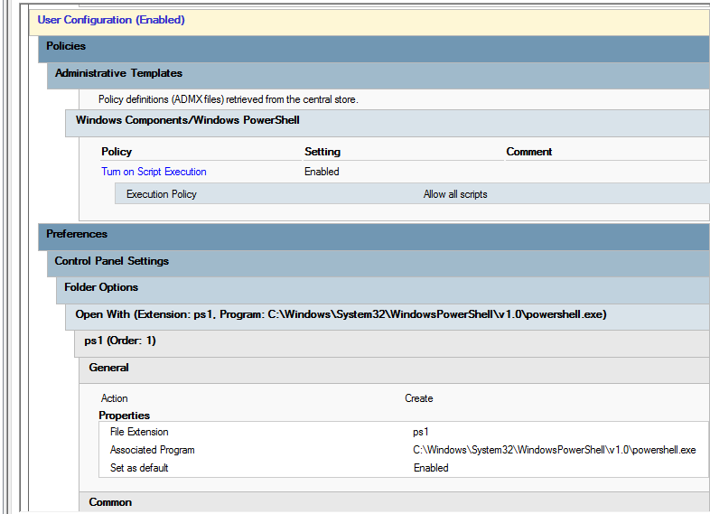

Purpose
This policy allows domain users to execute PowerShell scripts in a controlled environment. It is used to enable automation tasks such as system configuration, user management, and lab administration.
How It Works
The policy modifies execution restrictions on domain machines by allowing PowerShell script execution through Group Policy settings. It ensures scripts can run without being blocked by default execution policies.
How It Is Applied
This policy is applied at the Domain Level using Active Directory Group Policy Management. It affects all computers and users within the configured domain scope.
Configuration Steps
- Open Group Policy Management Console (GPMC)
- Select the target Domain
- Create or edit an existing Group Policy Object
- Navigate to: Computer Configuration → Policies → Administrative Templates → Windows Components → Windows PowerShell
- Enable “Turn on Script Execution”
- Select “Allow all scripts” or appropriate security level
- Apply and update Group Policy using
gpupdate /force
Screenshot
Configuration view inside Group Policy Editor:

Notes
Enabling PowerShell scripts should be controlled carefully to prevent unauthorized or malicious script execution. It is recommended to restrict access using security filtering or user groups where necessary.